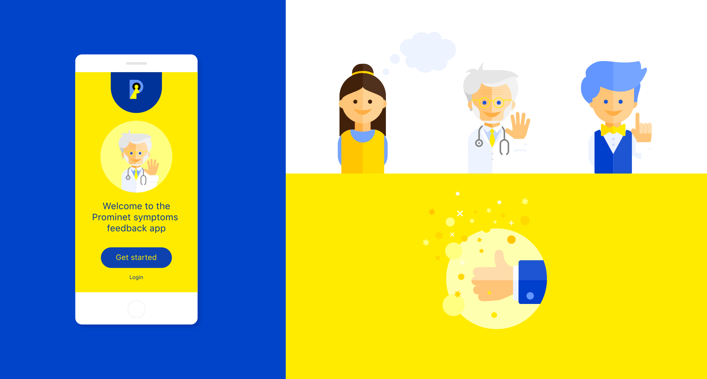
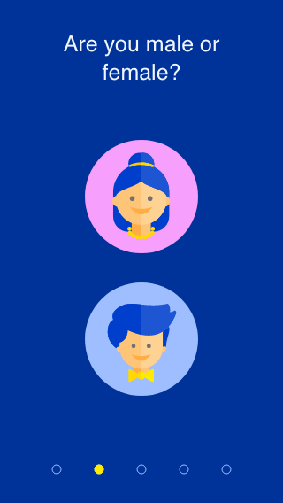
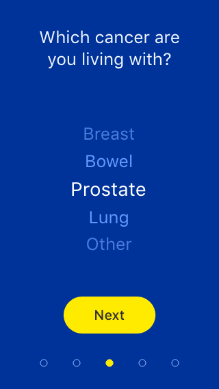
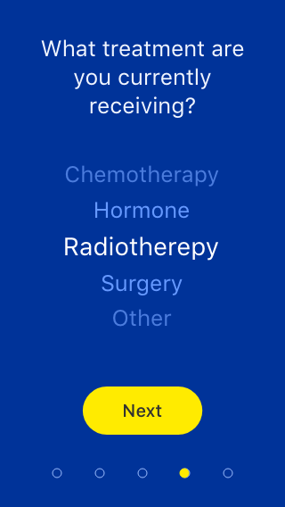
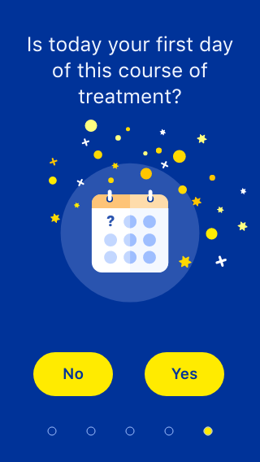
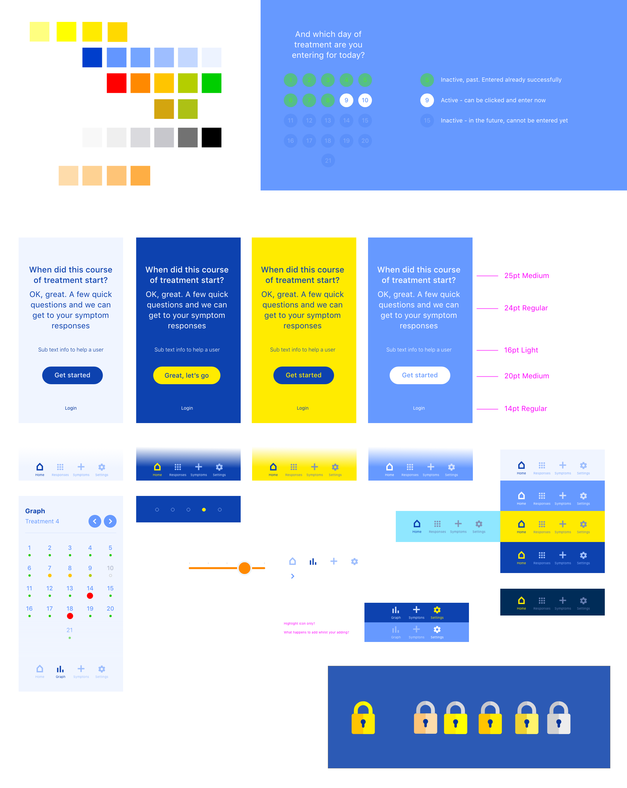

Prominet cancer symptoms app
The goal of the patients iOS and Android apps, along with the web-based 'doctor's dashboard', was to improve relationships and responsiveness between doctors and patients. Patients can log their symptoms daily, giving doctors instant, comprehensive insight into their wellbeing. This helps doctors prioritise effectively.

I was asked to work with a legacy logo (see top of phone) but I needed to flesh out a 'brand world' to bring the business and the app to life! So starting with visual exploration, I created a fresh, derivitive colour palette, iconography and characters. Doctor and patient interviews helped create the optimum interfaces for the two respective parties.




Shown above are some initial screens a user would see when commencing use of the app. Deliberately simple, one step actions, encourage confidence through ease of comprehension.

This flow diagram evolved over many iterations, conversations and lot of testing, you can see little thumbnails from the app to easily help viewing at a glance.
